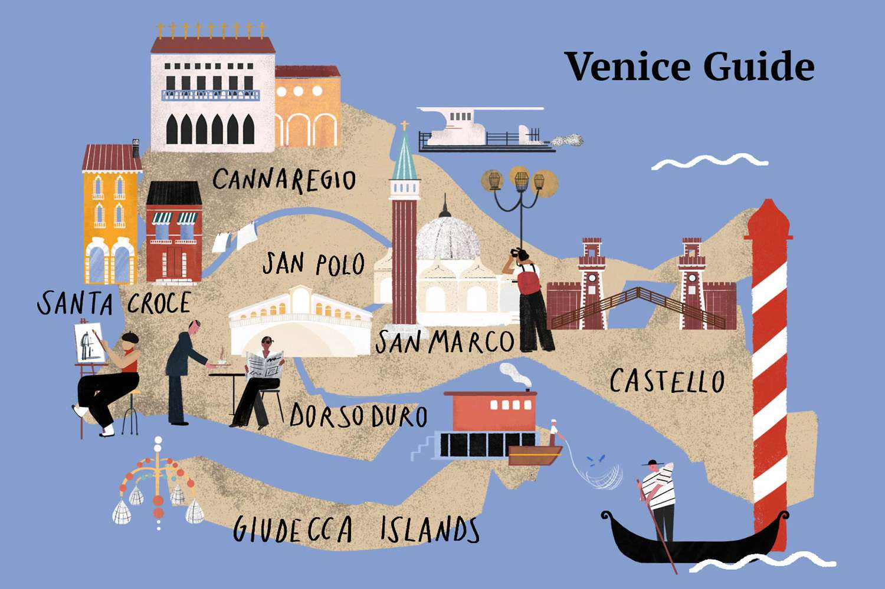
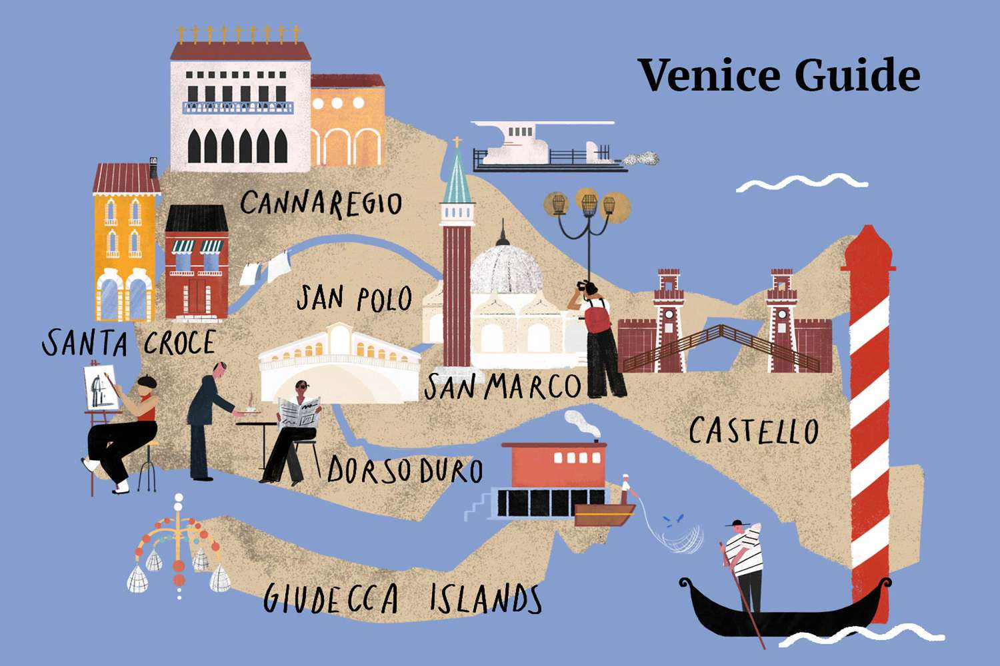

In particular, I would like to go to Venice.



My name is Ana. I graduated as a biochemist in 2007 and have worked as a researcher since then.
After completing my Masters in 2009, I had the opportunity to teach to University students for 4 years. In 2013 I moved to Southampton for my PhD in molecular biology and in 2018 I got an amazing position in Peterborough for a company that provides advice and tests in agriculture.
Last year, I decided I wanted to get new skills and take a different path in my career so I have become student with Code Nation.
I am learning a lot about coding and data analysis and I am really enjoying it.
Python
Pandas
HTML
Perseverent
Passionate
Laboratory management
Time Management
Biochemical techniques
I would like to visit Italy. I love the history of this county, the landscapes, the culture and of course the food.
In particular, I would like to go to Venice.
